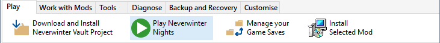

The benefits of using the Installer Tool to start Neverwinter Nights are...
- Apply different Profiles so that you can use different installations when developing or testing new Mods and don't want it to interfere with your normal gaming environment.
- Ensure that the correct options are used to start the game (eg Run as Administrator for Neverwinter Nights, start Steam's Enhanced Edition so that Steam runs in the background to make Workshop Mods available, etc).
- Allow the Installer Tool to create Restorer information for Character, Database and INI files when you exit Neverwinter Nights.
- Maintain Play Time information for each Mod you played.
Procedure
This procedure ensures that the correct Neverwinter Nights Installation or Enhanced Edition User Files folder is applied when starting the game.
For Steam users, the Installer Tool emulates a Steam generated shortcut for the game. This starts Steam, if it is not already running, before the game is launched. If you enable "Use NIT to manage Steam's Workshop Content" on the Preferences page in Advanced Settings, Steam's Neverwinter Nights is started directly without using a Steam Shortcut.
- Ensure you load the Profile you want to use for your Neverwinter Nights session. Use Load Profile from the File menu to switch between different Profiles (see Work with Profiles).

- Start your game session by selecting Neverwinter Nights from the Run menu or clicking Play Neverwinter Nights on the Ribbon's Play tab.

Related Topics
Key concepts and terminology
User Interface
Run the Installer Tool for the first time
Play Neverwinter Nights
Review Settings you may want to change
Deal with existing installed Mods